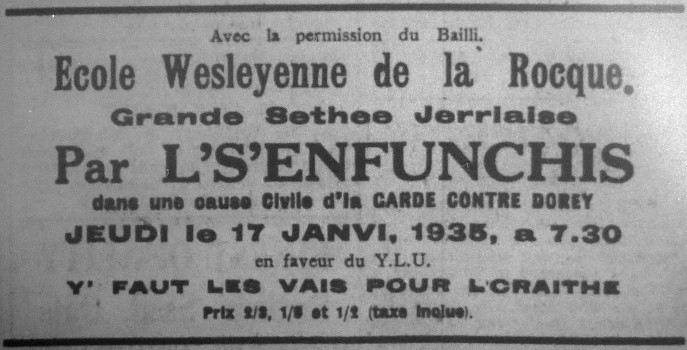

Cause Civile

Scène – La Court, les Avocats Maugi et Du Val entre et q'menche a bagouler ensemblye, le huissier est à s'proumné en r'gardant dt'emps en temps a la porte, finalement i' va s'monter oprès d'la porte.
La Cour entre.
Huissier: Silence, la Cour entre, lêv'ous.
Greffi: Y'a qu'une cause pour anniet. De La Garde contre Dorey. Moussieu Josué d'la Garde contre Mess Hespadiel Dorey l'actionnant a lis payi l'compte au Docteu Boulet pour soigns, visites et medicines. T'chinze louis d'Jez-neu ch'lins et d'Jez penins (£15 19s. 10d.) et pour perte d'rêcoltes pratiques et inconvenances Très chênts chinquante louis (£350 0s. 0d.), faisant un total de Trais chents £365 19s. 10. Soixante chin' louis d'Jez-neu ch'lins et d'Jez pênins : et concluant que l'dit Hespadiel Dorey set conv'nu d'vant Justice enfin qu'en sa présence et après preuve des faits allegis i' set condamné a lis payi la somme destallyie de Très chents soixante chinq louis d'Jez neu ch'lins et d'Jez pênins (£365 19s. 10d.) pour domages et inconvenances et pour couvri les frais de l'action et tout en d'vant des suivants : -
Messieurs George Amin, Jean Boulet, Ph'lip Le Bro, Tomeso Dutot, Anthime Fricot;
Maitresses Elizabet' Bisson, Eliza L'Cocq, femme d'la Garde, Mary Jane Le Bro, Milie Aspiet, Suzanne Gosselin, Anne Vaudin, Esther Dorey, Jane Roumyl.
President: Les Principaux sont i' ichin?
Greffi: Josué d'la Garde.
Avocat Maugi: J'men vais en soignyi.
Greffi: Hespadiel Dorey.
Avocat du Val: Il est ichin moussieu et j'prends soign d'li.
President: Applez les temoins.
Le Greffi l's'appele et quand il ont rêpounnu a lus nom il z'assermente.
Greffi: Ou promettez de dithe la vethitet, teute la vethitet, rin q'la vethitet et la puthe vethitet.
Avocat Maugi: Je d'mandais moussieu l'president que men client reste ichin ov min; i' peut que je sait obyyis de l'consulté d'temps en temps.
President: Oui, ch'est en ordre, que l'acteur et le d'fendant lus assieve ov l'us avocats; huissier remnez l'autres temoins.
Quand l'huissier a émné les temoins l'avocat Maugi s'leve et yiet la r'montrance.
Avocat Maugi: Le prumi Avri 1887 Mess Hespadiel Dorey en sprayant ses patates dans un clios applé la Brebis joignant a un autre clios applé la Mathe es Loups, appartenant a Moussieu Josué d'la Garde, située dans la Vingtaine de la Rocque, Paraisse de Grouville.
Le dit Dorey s'ayant fait servi d'un melange de blieue pierre et d'caux dant t'chi qui l'avait ajouaté d'l'arsenin d'piomb car i' craignait l'colorado beetle, fis l'travas si acchocrement que les radiches, caboches et bricolis au dit acteur futent tellement endouallyis et endamagis que ses pratiques futent forchis de l'chitté et qui subit d'grand' pertes, tout s'en travais ayant tett en vain et ses recoltes lis restident sus les bras.
Et que par avait mangi d'ses legumes i fut prins d'un empoaisounment d'arsenin et fut souas les soigns du docteu pour siez s'maines. Et que le dit Hespadiel Dorey n'avait pas besoin de s' servi d'arsenin d'piomb, le Colorado Beetle n'existant pas.
Et don't l'acteur d'mande qui set condamné a lis payi les soumes suivantes :
Le compte au Docteu Jean Boulet £15 19 10
Pertes de recoltes, pratiques et inconvenances et frais d' l'action £350 0 0
£365 19 10
Avocat Maugi: Moussieu l'president et messieurs ou v'nez d'entre la r'montrance, ou z'avez entendu les pertes et la maladie subite par l'acteur et j'men vais applé George Amin.
GEORGE AMIN.
Avocat Maugi: Ou êtes George Amin, y'un des inspecteurs noumés par les autoritêts pour inspecter l'sprayage et pour vais si y'a du Colorado Beetle pas les c'mins?
George: Oui, moussieu.
Avocat Mangi: Duthant le mais d'Mars Mess Dorey vos avait ti d'mandé de l'arsenin d'piomb?
George: Oui, moussieu, le matin du vingt-neuf de Mars quand je d's'cendi dans les chin s'heuthes y l'entret dya dans l'bel et i m'dis qui v'nait d'revé dans la niet que touas ses cios tes infectés de Colorado Beetle en effet pour se servi de ses patholes la faithe en mitouné, i pathaisset en être hors de li même et j'viyais qui l'avait grand peux; i me d'mendit douze livres d'arsenin d'piomb et sus chounna j'yen dounni et i s'en r'fut tout rejoui.
Avocat Maugi: Avaient ous tet visité ses cios devant?
George: Oui, j'avais fait la visité deux fais et oprès desjunné j'men fu les d'visité.
Avocat Maugi: Trouvites t'ous auchune chose?
George: Nannin, y'avait rin. J'passi touas ses clios et quand t'chi qu'j'y tais touylali j'fis la touanée dans l'vaisinin et j'en vi rin.
Avocat Maugi: Considethous le d'fendant un bouan fermi?
George: Oui, coume travailleux d'terre ch'est un bouan fermi, mais coume sprayeux j'nen ai pas y'eu l'experience, mais j'set bin qui l'a trejous tet gêné que l'beetle le troubyethait; en efet j'en t'est enniet, car i m'apportet toutes sortes d'insectes pour min a examiné, le dernyi qui m'apporti j'tet un sauticot.
Avocat Maugi: Ou voulez m'dithe qu'un houme qui s'conte un bouan fermi mesprend un sauticot pour la beetle?
George: L'idée du beetle l'avait tellement bouleverset qui prennet n'importe chi l'insecte pour la beetle.
Avocat Maugi: Ou z'êtes satisfait qui n'avait pas besoin de s'gêné d'même et q'ui n'y'avait pas besoin de sprayé avec de l'arsenin d'piomb?
George: Nen, j'tet simpyement de l'imagination de sa part.
Avocat Maugi: J'ne pus d'cheschions a vos d'mandé.
Avocat du Val: Ou v'nez de dithe que men client vint vos d'mandé de l'arsenin le 29 de Mars. Coument qu'ou z'êtes seux de la date?
George: Eh bin! J'garde un livre pour mettre bas les dates et les quantités d'arsenin que j'ai dounné car j'sis forchi de fourni une liste de cha que je d'livre toutes les s'maines.
Avocat du Val: En avous jamais dounné a chi qu's'uns devant?
George: Nannin, j'en avais jamais dounné d'vant, mais i faut que j'garde conte de cha que j'doune.
Avocat du Val: La seule qu'ou z'avez fourni j'tet Mess Dorey?
George: Ecoutez vous pour chi qu'ou me d'mendez la même chose coume ch'ti la. Après tout, j'en sis pas un menteux.
Avocat du Val: J'nen si pas si seux.
Avocat Maugi: Ecoutez men chier collegue, ou n'avez pas l'droit d'vos servi d'une telle expression. Le témoin a dounné s'n'évidence coume un houme honnête.
Avocat du Val: L'honnetet du temoin n'est pas en cheschion, qui repoune mes cheschions coume i' faut.
President: N'iyez pas tant d'herchin entre vos deux ou bin jamais j'nen finithons.
Avocat du Val: Eh bin, temoin, ou z'avez dit que persounne n'ont y'eu d'arsenin d'piomb que men client?
George: Oui.
Avocat du Val: Ach't'eu ne f'chin une cheschion bin importante; ou z'avez dit qu'ou fournident douze livres d'arsenin d'piomb a Mess Dorey le 29 de Mars. Y'en avous fourni d'autre d'epis chounna?
George: Nannin, et coumme j'cret bin qu'on z'allez me r'demandé ni a li ni a persounne d'autre, et si ou n'avez pas comprins, j'vos le r'dithai une autre fais; la seule persounne qu'en a y'eu et la seule fais j'tet Mess Dorey le 29 de Mars et j'yen dounni douze livres.
Avocat du Val: Mais, encouthagous les autres fermiers a faithe servi de l'arsenin d'piomb?
George: J'fais d'men mus, mais i n'veulent pas en entendre paslé et i'n'veulent pas l'touchi, i' m'ont touas dit qui l'amethais mus être a cassé d'la pierre que d'is touchi.
Avocat du Val: Mais dans un cas d'urgence le f'sais ti servi?
George: Nannin, ou savez bin que les Jerriais sont des tetouânes.
Avocat du Val: Avous connue Mess Dorey pour longtemps?
George: Oui, y'a pus d'trente ans que j'le counnais.
Avocat du Val: O z'êtes satisfait qui l'est bouan fermi?
George: Oui, tout a fait.
Avocat du Val: J'ne pus etc …
ELIZA L'CO, FEMME DE LA GARDE.
Avocat Maugi: Ou z'avez nom Eliza L'Co et ou êtes la femme a Moussieu d'la Garde?
Eliza: Oui Moussieu, j'avous tet mathié vingt ans.
Avocat Maugi: J'comprends qu'ou êtes vaisins avec Mess Dorey?
Eliza: Oui.
Avocat Maugi: Votre houme a ti jamais y'eu du bri avec Mess Dorey?
Eliza: Nannin, jamais.
Avocat Maugi: Dites a la Cour quand chi que votre houme fut prins malade?
Eliza: J'tet la niet du chinq Avri. J'fut revillie par des brès et j'pensais que j'tet touas les cats du vaisinin qui t'est a s'antre battre, mais quand j'vins a r'prendre mes idées j'vi bin que j'tet m'n'houme qui faisait des heurles terribyes et j'sauti horte du yiet toute ernervée.
Avocat Maugi: Ch'est qui s'arrivi?
Eliza: J'vis qui tet bin malade et j'fis d'men mus en l'y mettant des fiennais cauds et j'lis frotti l'estouma avec de l'huile camphrée et quand l'jour se fit j'envyi pour le docteu et quand y vint i'm dis qui criyait que j'tet des coliques et qui fallait l'gardé bin tranchille et pas l'excité.
Avocat Maugi: Vos dis ti chi qu'avait causé les coliques?
Eliza: Oui, i'm dis que j'tet après avé mangi t'chique chose qui n'accordé pas avec li et qui craignyet qui l'avé le d'dans empoiasouné.
Avocat Mangi: Le Docteu avet ti des soupçons sus la poiason?
Eliza: Oui, i'm dis que les symptômes poigntaient a l'empoiasonment d'arsenin et me d'mandi chi qui l'avait mangi chu jour la. J'lis dits qui l'avait y'eu du lard pour sen diné, car j'avimes tué la vielle trie le jour de d'vans et coume j'l'avimes nouarrie pour quatre ans, savous bin moussieu qu'ou b'set 450 livres.
President: Y'a pas d'soign d'la vielle trie, dites nous chi l'autre chose qui l'eu?
Eliza: Eh bin, il eu des patates et du bricoli et des radiches pour sen tais.
Avocat Maugi: Avous jamais veu votre houme sprayé ses recoltes avec de l'arsenin d'piomb?
Eliza: Nannin, i n'y cret pas et equot bin car si j'le viyais touchi a chounna j'l'achoumithais.
Avocat Maugi: Avous jamais entendu votre houme dithe qui l'avait veu le Colorado Beetle dans ses recoltes?
Eliza: Nannin ja! et j' n'y cret pas min a chu colero la; chi sorte d'bête qui ch'est, ch'est-tu bin grand?
Avocat Maugi: Nannin, ch'est une insecte a la près grand coume une grosse bieue moque.
Eliza: Ch'est des menties chounna, y'en a un pourtret dans la boëte de la paraisse et ou l'est au mains grande coumme un moisson, et j'ai dit a m'n'houme si t'en vet prend t'narme et tithe dessus a p'tit piomb, mais pas de s'faithe servi d'la poiason sus ses récoltes et pis sprayé d'la poiason ch'est coume eprouvé a attrapé un oiasé én l'is mettant du set souas la coue.
President: Ecoutez témoin, n'en v'la assez de votre gnollin.
Eliza: Eh bin, chi qui veur savé d'autre?
President: Combin longtemps que sa maladie duthi?
Eliza: Dans les siez s'maines et même i n'est a peine r'fet.
Avocat Maugi: Dans l'couothant des siez s'maines le docteu ramni ti la cheschion d'empoaisounment?
Eliza: Oui, mais après chinq s'maines i mangi de l'ciergi en lis dounnant du tais de Jean Bart et j'vos en prie est ous finis, car j'ai equot du fethage a faithe quand j'men vais arrivé à la maison.
Avocat Maugi: J'ne pus, etc …
Avocat du Val: J'men vais pas vos gardé longtemps, mais j'voudrais qu'ou dithaient a la Cour coument que votre houme fu prins, chi symptômes qui l'avait?
Eliza: Moussieu l'president, chi qu'est j'ti la a combin qui faut que j'repounne?
President: Temoin, ou êtes ichin pour nos dithe la vethitet, raipounnez la cheschion.
Eliza: Eh bin, i' trembiat et grenottait, se teurtet bord sus bord et criyait.
Avocat du Val: J'cret bin que j'tet des symptômes de colique, mais v'la chi n'prouve pas l'empoiasounment.
Eliza: Eh bin, j'voudrais qu'on z'ethaient y'eu ma coume li.
Avocat du Val: Faisait ti autre chose?
Eliza: Oui, i grugait les dents et la breux lis v'net a la bouache, ses y'eux rouallaient et i jouet des bras et des gambes et coume je veu peppée dounné une balle est ch'vaux pour la colique j't'est en même de y'en dounner y'une etout, et coume i jouait tellement des gambes j'avais peux qui se ruissent hors du yiet et j'y'amathi les gambes avec ses gelesses.
Avocat du Val: Oui z'êtes bin seux qui n'viyait pas d'visions ni de souathie avec des bonnets ni de bieue chiyeuvres picottée de jaune.
Eliza: Mais chi l'affront. Jamais n'n'avais tet cheschiounée d'même.
Avocat du Val: Votre houme a ti jamais y'eu du bruit avec Mess Dorey?
Avocat Maugi: J'objecte Moussieu, chutte cheschion n'est pas en ordre.
Avocat du Val: Je tout l'droit d'la d'mandé, n'ou n'actionne pas generalement ses amins et pi sou y'avez d'mandé la même cheschion.
President: La cheschion est en ordre.
Avocat du Val: Eh bin temoin, votre houme ou vous même avous jamais y'eu du bruit avec Mess Dorey?
Eliza toute futhieuse: J'ne l'amons pas, car achteu qui l'exhibite es shows i remporte touas les prix et n'oun peux avé rin.
Avocat du Val: V'la chi f'sa temoin. J'ne pus, etc …
DOCTEU BOULET.
Avocat Maugi: Ou êtes le Docteu Boulet, et ou z'avez pratichi bin d's'anées dans l'isle?
Docteu: Oui, chinze ans et j'en ai veu pus d'une sorte.
Avocat Maugi: Pouvons nos dithe a chi date qu'ou fûtent applés pour allé vais Moussieu de la Garde?
Docteu: J'tet l'matin du siez d'avri. J'm'en rapelle pour seux, car j'avous du paisson pour desjuné une fais par mais et j'tet chu jour la et quand la cioche sounni j'fallyi d'mengoué sus une hetheque de mulet que j'avais acaté d'y'un des pecheurs le sé de d'vant.
Avocat Maugi: Quand ou arrivident, coument qu'ou trouvident le malade?
Docteu: Ma fé j'nen criyais pas grand chose quand j'entri dans la chambre. J'vi bin qui l'avé la breux a la bouache, les yeux lis toupinnaient et la bouache lis teurtet, i fremissait et j'vit tout d'un coup que j'tet les symptômes d'empoiasounment.
Avocat Maugi: Chi qui tet votre prumi traitement?
Docteu: J'lis dounni une dose d'epecacuanha wine pour le faithe vomi.
Avocat Maugi: I' reuissident ous?
Docteu: J'le cret, ou s'êtes ravi de vais chi qui deshali du pouare meyan.
Avocat Maugi: En gardident ous une quantité pour l'analysé?
Docteu: Oui, ch'est la prumièthe chose que j'faisons et le résultat ch'tet qui y'avait d'la poaison dans sen système.
Avocat Maugi: Pouvons dithe a la Court chi poaison que ch'tet?
Docteu: Oui, le resultat pointe a d'l'arsenin.
Avocat Maugi: Ou z'êtes bin seux que j'tet de l'arsenin?
Docteu: Oui, seux et certain.
Avocat Maugi: Fu ti bin des s'maines souas vos soigns et est i totallement reablyi?
Docteu: I fut siez s'maines et il est mus a'ch'teu.
Avocat Maugi: J'ne pus, etc …
Avocat du Val: Eh bin, chez symptômes la qu'on v'nez d'nos dounné sont justement coume les symptômes d'ivrognie, ch'n'est pas qui l'avait les horrors, heurlait ti?
Docteu: Nannin, j'set bin que ch'tait les symptômes d'empoaisounment. J'ai veu assez d'houmes souas l'bethe pour savé la difféthence.
Avocat du Val: Chi difféthence qui y'a entre l'arsenin et l'arsenin d'piomb?
Docteu: Mangez n'en et pi sou verrez.
Avocat du Val: J'ne cret pas qui j'aiprouvethai chouanna équot, mais f'saites ou servi la même traitement pour les deux poaisons?
Docteu: Oui, je f'sais justement la même chose.
Avocat du Val: Ou z'êtes bin satisfait que ch'tet par l'arsenin qui tet empoaisouné?
Docteu: Oui.
Avocat du Val: J'ne pus, etc …
ELIZABET BISSON.
Avocat Maugi: Ou z'avez a nom Elizabeth Bisson?
Elizabeth: (affrontément). Le monde m'apelle Betté.
Avocat Maugi: Eh bin Betté.
Elizabeth: Ecoutez moussieu! Y'a que m's'amins que j'permets de m'applé Betté.
Avocat Maugi: J'pensais que j't'est votre anmin, mais si ou voulez Madame Bisson.
Elizabeth: M'n'amin et j'en vos counnais sement pas ch'est la prumiethe fais que j'vos vet et je grand envie de ne r'venin pas ichin, mais enfin applez min Betté si ou voulez.
Avocat Maugi: Ach'teu que j'avons une entente, ecoutez. J'comprends qu'ou vendez au marchi et qu'ou vendez toutes sortes de legumes, les craissous vos même ou les avous de fournis?
Betté: Nannin, j'les craient pas. J'les acate de difféthents fermiers et j'en prenais le pus grand nombre de Moussieu d'la Garde.
Avocat Maugi: Combin d'temps q'y'a qui vos fournis?
Betté: Y'a pus d'vingt ans a matin.
Avocat Maugi: Et dans l'coauthant d'ch'est vingt ans la avous jamais y'eu cause de vos piandre de ses legumes?
Betté: Ah mais nannin d'ja et je veu l'monde v'nin me d'mandé tout partichuyethement pour ses legumes.
Avocat Maugi: Ou voulez dithe qu'on n'avez jamais y'eu d'piantes?
Betté: Nannin, j'en eu au c'menchement d'avri et j'perdi bin des pratiques.
Avocat Maugi: Pouarrez t'ous vos rasouvné de la date qu'on q'menchites a r'chevé des piantes?
Betté: Oui, au si près q'possibye au q'menchement d'Avri.
Avocat Maugi: Dites a la Cour exactement les piantes qu'ous z'avêtes r'chu?
Betté: Eh bin Moussieu, les radishes t'est tellement duthes et crettiyie que quand les gens les manngaient lus dents en r'bondissaient et i fremissaient jusq'es ortés.
President: Temoin r'petez ch'na. J'ne pas tout a fait comprins. – (Betté le r'pête).
Avocat Maugi: Dites nous pour la caboche?
Betté: La caboche quand j'l'accatais tet fraiche, mais ou n'avet pas tet une demieuthe sus ma stall qu'ou tet fieytrie et changeait d'couleur si bin en fut que mes pratiques se piagnirent de terribyes douleurs dans l'estouma et persounne ne voulident d'autres de mes bricolis, car les siens qu'en eudent fudent rempyis de bibettes et une partie d'yeux ont perdu l'us g'veux et ach'teu me f'chin amanchi ruinée.
Avocat Maugi: Apart de chutte fais la ou t'êtes satisfaite de sen produit?
Betté: Parfaitement satisfaite.
Avocat Maugi: Avous continué a acaté de ses legumes?
Betté: Nannin, si j'avais continué mes pratiques m'ethaient touas chité et ch'est avec grand r'gré que je tet forchie de l'chitté.
Avocat Maugi: Avous trouvé que le Sieur de la Garde vendait ses legumes trop chiethe?
Betté: Nannin d'ja. J'le trejous trouvé bin raisounabye.
Avocat Maugi: Quand ou r'chutent des piantes, futent ous l'dithe a Moussieu d'la Garde?
Betté: J' m'y en allais mais le samedi dans l'couthent d'l'arlevée j'l'aperchu dans l'marchi a allumé sa pipe oprès d'la fontaine et j'fut l'trouvé et j'lis dis les piantes que j'avais y'eu.
Avocat Maugi: Chi qui vos dis la d'sus?
Betté: I' resti tout surprins et m'dis qu'ine criyet pas que j'tet ses legumes, car i n'avait jamais y'eu d'piantes devant mais j'viyais bin avec li car i pathait ssé diversement malade. J' y'en passi la r'merque et i'm dis qu' n'savait pas t'chi qui l'avait, mais qui criyet qui j'tet une indigestion.
Avocat Maugi: Pouvitent ous l'is montré t'chiq'une de ses legumes?
Betté: Nannin, étant samedi et le jour que j's'imes le pus embarassés j'les avez enviée au destructor.
Avocat du Val: Temoin, ou z'avez dit que les gens ne voulaient pas d'autre des legumes a Moussieu d'la Garde?
Betté: Ah bon! n'e nr'vechin un autre a me r'cheschouné, despeschous, car j'voudrais r'être dans l'marchi. J'mi piez mus qu'ichin.
President: Eh bin, si ou voulez r'touané au marchi respounnez les cheschions pus vite qu'oune faites.
Betté: En êtes ous equot un autre qu'est touallyi dans choune chin?
President: Ecoutez, pas tant d'affront et pensez bin a t'chi qu'ou z'êtes a paslé, respounnez les cheschions coume i faut.
Betté: Eh bin! t'chi qu'ou voulez savé, vous qu'êtes si chuthyeux?
Avocat du Val: Si j'ai bin comprins, ou z'avez dit qu'ou z'acatez du produit d'autre fermiers?
Betté: Venne, j'l'ai dit.
Avocat du Val: Eh bin, coumment qu'ou pouvez dithe que la marchandise de t'chi qu'ou z'avez y'eu des piantes tet la sienne a Moussieu d'la Garde?
Betté: Eh bin. Coume une partie d'mes pratiques d'mandaient d'ses legumes, j'lais gardais a part pour y'eux.
Avocat du Val: Ch'est coume dans toute autre choses, ou favorisis t'chiqu'z'uns d'vos pratiques.
Betté: Chounna na rin a faithe avec vous. Allous me r'dounné les pratiques que j'ai perdu?
Avocat du Val: Mais temoin, si j'vos disaient que j'men vais betos applé un temoin pour dithe que j'tet viyen que Moussieu d'la Garde vendait s'en fait bin trop chi et qu'ou t'êtes forchies de r'vendre chi a votre tout que vos pratiques vos ont chitté, chi qu'ou dithaient?
Betté: Eh bin, si s'avais t'chi que ch'tet q'avait dit chounna j'y'en contais ch'est des menties.
Avocat du Val: Vos piez ti dithe a la Cour chi qu'ou z'applez une radiche crettiyie?
Betté: Eh pouarre bachouard, une radiche doublye fyetrie.
Avocat du Val: J'tet d'merveilleuses radiches et j'vet bin qu'ou êtes une persounne qui n'a pas grand raison, ch'est i qu'ou êtes trop r'gardante au produit qu'ou z'acatez?
Betté: Nannin, j'sis pas trop r'gardante, mais si ou v'naient a ma stall et que j'vos vendrais des radiches et d'autres legumes toutes cretiyies et fietries, t'ch'est qu'ou'me dithaite?
Avocat du Val: Eh bin! j'men ithais ailleur, mais y'en avait ti d'autres que vous qu'acataient les legumes a Moussieu d'la Garde?
Betté: Nennin, y' avet q'min et j'n'avais auchune embarras a m'defaithe de ses legumes.
Avocat du Val: Mais ou z'êtes bin seux qu'ou n'êtes pas r'gardante a l'érgard de vos pratiques?
Betté: Et vous êtes ous r'gardante quand ou z'enviez vos contes a vos clients, j'cret bin que y'en a pas de biaou p'tis bus destayis d'sus pour une p'tite conversation de chinq minutes n'en v'la pour sept ch'lins et d'mi; si j'vendais mes legumes si chi coume ou chergez je f'sais fortune bin vite.
Avocat du Val: J'vet bin qu'ou z'en counaissis bin long de même. Je ne pus, etc …
PH'LIP LE BRO'.
Avocat Maugi: Ou êtes Ph'lip Le Bro', fermi dans la Vingtaine de la Rocque et près vaisin a Mess Hespadiel Dorey?
Ph'lip: Oui, Moussieu.
Avocat Mangi: Le matin du prumi Avri ou z'eutes occasion d'allé siez Mess Dorey?
Ph'lip: Oui. J'avez tet lis d'mandé pour me prêté un gri[ff]on a patates, car je v'nais d'rompre la patte de d'vant du min en crochtant une rachine de poumi et coume la berisse tet un mio rèviyie chu matin la j'fut fianchi d'une telle raideur sus l'griffon que j'me tappi la tête sus l'poumi et j'me fis la pus fiere ingrinfieuse a la hanque j'me rompi très dents et j'failyi d'mapyati l'nez que j'en porte équo la merque et si ou voulez j'men vais vos la montré.
President: L'ingrinfieuse a ti auchune chose a faithe a la cause?
Ph'lip: J'nis counnais rin mais l'ingrinfieuse que je r'chu m'empechi de continué a griffoné et ma fille Julia fut oblijis de prendre ma piêche du chi qu'on l'en eu les mains couverte d'alitre.
Avocat Maugi: Mais temoin, v'la qui nos intéresse pas, quand ou futent siez Mess Dorey chi qui tet a faithe?
Ph'lip: I tet entraint de demeler du spray et i m'dis qui s'n'allait mettre de l'arsenin d'piomb d'dans, car i craignait le Colorado Beetle.
Avocat Maugi: Vos terres joignant ti es siennes a Mess Dorey?
Ph'lip: Oui, j'ai un clio q'abute au sud l'a Brebis applé la Pièche est Vlicots.
Avocat Maugi: Avaient ous r'merchi auchune chose d'extraordinaithe dans vos patates?
Ph'lip: Oui, j'tet un raide biaou betchet d'patates et touas mes vaisins l'admithaient.
Avocat Maugi: Ch'n'est pas chounna que j'veux vos dithe. Avaient ous r'merchi auchune trace de Colorado Beetle?
Ph'lip: Nannin, i' t'aient propres et saines de toutes maladies.
Avocat Maugi: Lè clios qu'ou t'êtès a griffoné tet ti près d'la Brebis a Mess Dorey?
Ph'lip: Oui, ch'tet la Pièche-es-Vlicots que j'vos avaient deja dit.
Avocat Maugi: Le vident ous mêler l'arsenin parmi l'spray?
Ph'lip: Nannin, j'men r'fu avec lè griffon. J'voulais que ma fille prisse ma pièche, le temps té sec êt j'voulais avanchi.
Avocat Maugi: T'chi melange qui faisait servi?
Ph'lip: D'la bieue pierre et d'la caux.
Avocat Maugi: Ou' z'êtes bin seux que ch'tet d'la bieue pierre et pas du Reckitt's Blue?
Ph'lip: Lè melange que 'tet a faithe servi ch'tet du spray et pas du whitewash.
Avocat Maugi: Avaient-ous jamais cherchi jour le Colorado Beetle dans vos clios?
Ph'lip: Oui, j'avons tout l'temps gardé nos yieux ouverts et j'nen avons jamais veu.
Avocat Maugi: Donc ou n'criyez pas qui l'est nécessaithe de sprayé avec de l'arsenin d'piomb?
Ph'lip: Nannin et j'n'envais pas barbouilli men fait avec chutte poison la. J'ne pas d'envie d'pâchi mes velles équo.
Avocat Maugi: Ou z'êtes satisfait que Mess Dorey n'avet pas besoin de s'faithe servi d'arsenin?
Ph'lip: Nen, pas du tout.
Avocat Maugi: T'chi l'heuthe qui t'et quand ou fitent siez Mess Dorey?
Ph'lip: Sept heuthes un quart. J'avais justement q'menchi a griffoné quand chounna s'arrivi.
Avocat Maugi: J'ne pus, etc …
Avocat du Val: Temoin, avous counnu le Sieur Dorey longtemps?
Ph'lip: Eh mon pouare Mess, j'l'ai counnu toute ma vie.
Avocat du Val: J'me fais l'idée qu'ou êtes assez bouans amins, car r'oun va pas emprunté d's'otis siez ses ênemins.
Ph'lip: J'simes les miyeurs amins d'la terre. J'lis prête êt i'm prête et j'travaillons d'ensemblye.
Avocat du Val: Donc quand ou z'avez dit qui r'tet pas necèssaithe de s'servi d'arsenin, j'tet par c'que vous même ou n'y criyaient pas.
Ph'lip: Venne, j'n'y crèt pas êt coume je deja dit, j'men sèrvithai pas et j'simes forchis d'en faithe servi la prison pouarra être ragrandie ou bien faudra mettre les fermiers très ou quatre dans chaque cachot.
Avocat du Val: Ach'teu temoin, considethous Mess Dorey un bouan fermi?
Ph'lip: Eh bin j'men étounne; un fermi qu'a gagni la coupe au Show d'l'Isle avec sa Pentuel's Lady Bird pour les vielles vaques par le fameux boeu Golden Fern Noble et avec sen Mont Orguel's Sonny Boy pour les jeunes boeus et un prumi prix pour les g'niches et qui remporte le prumi prix causiment touas l's'ans dans l'show d'legumes et ou me d'mendez si ch'tet un bouan fermi, et bin again j'men etounne.
Avocat du Val: Avous jamais veu le Sieur Dorey sprayé?
Ph'lip: Oui, bin des fais.
Avocat du Val: Criyous qui l'est l'houme pour allé delibethement barbouallyi les recoltes de ses vaisins?
Avocat Maugi: Moussieu l'president, j'objecte men chier confrère n'a pas l'droit de d'mandé une telle cheschion.
Avocat du Val: J'en ai l'droit. Y'a un precedent. En 1854 le 13 de Janvi, Ph'lip Lagraissi actionni 'Douard Le Rochi, quand i y'avait d'mandé de v'nin lis salé un lard, le [l]ard touani rouêtre et d'une couleur de rui, i fut prouvé finallement que l'saleux tet sale. L'Avocat Lanterne qui d'fendait d'mendi a l'acteur si en mettant l'salpetre dans l'piqye si navait pas laissi contre un t'chas de p'tun dans l'saleux. L'Avocat Haougard, qu'actioné mis objection a la cheschion, mais la Court decidi que l'd'fendant avait l'droit de d'mandé la cheschion. Dont je cret que j'ai l'droit d'la d'mandé.
Juge: Le cas n'est pas l'même et ou n'avez pas l'droit de d'mandé chounna.
Avocat du Val: Ou z'avez dit que y'avait persounne avec Mess Dorey quand ou fudent lis d'mandé l'griffon?
Ph'lip: N'en y'avet persounne.
Avocat du Val: Ou dites qu'ou t'êtes la a sept heuthes un quart; j'tet de bouanne heuthe.
Ph'lip: J'q'menche men jour de bouanne heuthe, pas a djez heuthes coume vous.
Avocat du Val: Je ne pus, etc …
MARY JANE LE BRO'
Avocat Maugi: Ou êtes Mary Jane Le Bro' et fille de Mait'e Ph'lip Le Bro'?
Mary Jane: Oui Moussieu.
Avocat Maugi: Vos pieds ti nos dithe t'chi qui s'arrivi siez vous l'prumi d'avri?
Mary Jane: Eh bin, si j'men rapelle coume y faut, i' tet sept heuthes et chique minutes du matin, j'v'nans d'escremer l'lait avec memmée et j'tais sus l'point d'touané la bathette pour faithe le beurre quand peppée arrivi et j'vos asseux moussieu ch'tet un bel objet.
Avocat Maugi: Mais continuez a nos dithe chi qui s'tait arrivà?
Mary Jane: J'tet a griffoné ses patates dans la Pièche es Vlicots et en passant un poumi i crochti une rachine et …
Avocat Maugi: Exchusez mé, mais ch'tait ti votre pethe qui crochti la rachine ou bin l'griffon?
Mary Jane: Ah secours de grace, n'ou vait bin qu'ou n'êtés pas fermi. Coumment qu'un houme s'en va crochter une rachine de poumi. J'tet l'griffon qu'happit la rachine pouaré begot et slingi peppée contre le poumi; le pouare houme eut plusieurs dents d'abattus et i' s'fis grand ma a la hanque.
Avocat Maugi: S'en fu ti s'couachi quand il arrivi a la maison?
Mary Jane: Nannin ja! après s'êtré lavé la fache i' s'en fut empionnant siez Mess Dorey vais s'il avait un griffon a lis prêté.
Avocat Maugi: Y'en prêti ti y'un?
Mary Jane: Oui et coume j'trouvais qui tait hors bin longtemps j'men fut vais si i' tait en veux. J'le rencontri dans la cache. I m'dis qu'il avait té forchi d'assiathe sus l'possé, car sa hanque le d'voré.
Avocat Maugi: Vos dis ti chi q'le Sieur Dorey faisait?
Mary Jane: I' passi la r'merque qui tet en train d'sprayé.
Avocat Maugi: Dont, après avé empruntet l'griffon i' continui a griffoné ses patates?
Mary Jane: Nannin, ch'tai mé qu'eut la job de griffoné tout; i'n'pouvait pas marchi, sa hanque l'is faisait trop ma.
Avocat Maugi: Ou n'avez jamais veu votre pethe se faithe servi d'arsenin d'piomb?
Mary Jane: Vos p'yait ti r'peté chouanna. J'nait pas comprins.
Avocat Maugi: J'vos d'mandé si ou z'avez veu votre pethe avec de l'arsenin d'piomb; ch'est d'la poaison qu'n'ou mêle parmi l'spray pour tué auchune insecte qui fait du ma a la piante.
Mary Jane: J'ne sait pas t'chi q'ou voulez dithe, mais j'ai veu des patchets d'poudre dans notre mansarde, mais chais “Dry Spray” qu'est merchi d'sus. Est-che chounna qu'ou voulez dithe, car peppée ne l'za jamais fait servi ev'la deux ans qu'ils' acatit, dans t'chique bouan jour j'les fianque t'hai sus la mais.
Avocat Maugi: Ou n'avez jamais entendu auchun paslé contre le Sieur Dorey coume fermi?
Mary Jane: Pas pus q'chouanna, mais v'la deux ou très s'maines que des rumeurs sont par les q'mins qui la l'chervé cratchi.
Avocat Maugi: Arrêtez une minute, ou nos dites qui l'a l'chervé crachi, mais de chi maniethe?
Mary Jane: Faut ti que j'respounne chutte cheschion-là? ch'n'est que des rumeurs après tout.
President: J'ai r'gré ma chiethe dame, mais i' faudra rêpondre; i peux que je s'a de grande importance, et pi sou n'avez dit trop pour arrêter respounnez la cheschion.
Mary Jane: Eh bin, i' pretend qui vait d's'incetes sus ses piantes dans touas ses cios et i' faut que d'être a rêver chutte pampheque d'insecte niet et jour; s'en domestique me dis l'autre jour qu'a longeur de temps i' t'aient parmi l'spray.
Avocat Maugi: Ou nos z'avez dit que l'domestique vos dis qui t'est parmi l'spray a longeur de temps; vos dis ti avec chi qui l'faisaient.
Mary Jane: I' paslait d'bieue pierre et d'caux et … ah, j'men rapelle pas.
Avocat Maugi: Mais ou s'êtes satisfaits qui mettait d'autre chose?
Mary Jane: Si ma memoithe me fait pas d'faut i mettait t'chique autre salopsie d'dans.
Avocat Mangi: Je ne pus, etc …
Avocat du Val: Ou z'avez dit que Mess Dorey et votre pethe s'ente prêtes des otis v'la chi montre bin qui sont bouans amins?
Mary Jane: Oui.
Avocat du Val: Votre pethe va ti souvent vais Mess Dorey?
Mary Jane: Causiment toutes les s'maines.
Avocat du Val: Dont il est bin au couathant dé savé chi sorte de fermi qu'est Mess Dorey?
Mary Jane: Venne, et il a trejous dit que ch'est un raide bouan fermi.
Avocat du Val: Achteu ou vos en fudent griffoné a la pièche a votre pethe, dans chi betchet que ch'tet?
Mary Jane: Dans la Pièche es Vlicots.
Avocat du Val: Vident ous Mess Dorey sprayé le clios d'a Brebis?
Mary Jane: Oui, car j't'îmes dans l'prechain clios et j'vimes Anthime Fricot le domestique arrivé avec la machine et Mess Dorey et Mess Dutot t'est avec li.
Avocat du Val: Le spray volait ti?
Mary Jane: Un mio, mais j'n'y pris pas fort d'avis. Y'a hardi d'poumiers dans l'clios et j'en voulaient pas faithe coume peppée. Je v'nais justement d'avé un nouviaux chippé d'fausses dents et j'n'avais pas l'idée d'les rompre sus un poumi.
Avocat du Val: Chi qui tet a vos aidgi a griffoné?
Avocat Maugi: Moussieu l'president et messieurs d'la Cour, coume men chier collegue est si chuthyeux. Mess Le Bro' avet un jeune Breton coume domestique, mais i s'en r'fu en France dans l'mais d'Juin.
Mary Jane: Venne ch'est vrai, quand i' vi que j'allimes avé d's'angyais pour desfoui i vouli pas resté et j'peux vos dithe que j'l'avons manchi et si j'pouvimes le r'avé j'le manquesimes pas.
Avocat Maugi: Je ne pus, etc …
MILIE ASPIET.
Avocat Maugi: J'comprends que votre nom est Milie Aepist?
Milie: Oui.
Avocat Maugi: Counnaissous Elizabeth Bisson?
Milie: Oui, ou l'est vendresse dans l'marchi.
Avocat Mangi: Avous tout l'temps tait satisfaite de ses legumes?
Milie: Oui d'ja, jusqu'a un certain temps, mais me fé de pis l'mais d'avri i' n'vallaient rin et j'men vais vos dithe moussieu qui t'est malencheutheusues.
Avocat Maugi: Mais chi qu'ou voulez dithe par malenchentheuse?
Milie: I' t'est a peine dans la maison qui l'infectais sus bu.
Avocat Maugi: Avous continué avec yi d'pis chu temps la?
Milie: Nannin, car j'avais peux d'être empoissounée.
Avocat Maugi: Mais ch'nest pas viyan que les legumes sont malencheutheusues qui vos empoaisounnaient?
Milie: Nen. J'admets bin chounna, mais j'maperchu de diffethantes taques sus les fielles.
Avocat Maugi: Y'avait ti signe de brulement sus l'fielles?
Milie: Les taques t'est brunâtres; v'la tout que j'peux vos dithe.
Avocat Maugi: Quand ou mettaient les legumes a bouilli y'eau te ti descouleuthée?
Milie: Oui et n'oun pouvait pas resté dans la chuisine par l'odeur.
Pro: Je ne pus, etc …
Avocat du Val: Temoin, ou v'nez de dithe que les taques t'est brunâtres, mais pouvons nos dithe si v'avait des p'tites taques assez coume de la caux?
Milie: Nannin, ch'tet des grosses taques pouarries.
Avocat du Val: Y'en avei ti fort?
Milie: Nannin, deux s'très.
Avocat du Val: Ou z'êtes bin seux d'chounna?
Milie: Oui, seux et certain.
Avocat du Val: Ou nos avez dit que les legumes t'est a peine dans la maison qui l'infectais; chi qui fait qu'ou les bouillaient?
Milie: Eh bin, l'les desmêli avec un miôt d'bran pour les poules et ou s'êtes etounnait moussie combin qui pounne d'empis.
Avocat du Val: J'sis bin content d'savé chounna. J'en f'sais autemps avec les maines, car y'a pus d'un mais que j'n'ai veu un oeu. J'ne pus, etc …
JOSUE D'LA GARDE.
Avocat Maugi: Moussieu d'la Garde, vos piais ti dithe a la Cour ch'est qui s'est passé la s'maine du premi avri entre vous et Mess Dorey?
Josué: Eh bin, l'arlevée de samedi le chinq avri Elizabeth Bisson m'apperchu oprès d'la fontaine dans l'marchi et ou vint m'trouvé et m'dis qu'ou s'en allait pas prendre d'autre de legumes de min, car toutes ses pratiques la chitaient, car i' trouvaient que mes legumes ne valaient rin.
Avocat Maugi: Vis dis t'alle pourchi?
Josué: Oui, ou m'dis que les radiches t'est fieytries et cretiyis, que la caboche et les bricolis pathaissaient frais quand ou l's'acaté, mais qu'ine duthaient pas sus sa stall et même y'eu t'chiqu'une de ses pratiques qui les raportident.
Avocat Maugi: Chi desmarches qu'ou prident quand ou z'entendident chounna?
Josué: Quand je r'vins d'la ville, j'men fut dans mon clios examiné mes legumes e j'm'aperchu qui'n'pathassaient pas trop bin, les caboches et les bricolis t'est rempyis de taques bianches coume si du spray avet chais d'sus et en r'gardant pardessus l'fossé a Hespadiel Dorey j'maperchu qui l'avait sprayé. Apercheuvent sen domestique qu'amontait la cache j'lis d'mandi si l'avait sprayé derniethment. I m'dis que oui, le prumi d'avri. J'lis d'mandi chi spray qui l'avait fait servi. I'm'dis d'la bieue pierre et caux, et coume sen maitre craignait la Colorado Beetle il avait ajouté de l'arsenin d'piomb d'dans.
Avocat Maugi: Futent ous trouvé Mess Dorey sus chounna?
Josué: Nannin, coume i' tet deja tard j'pensi que j'ithais l'lendemain, mais j'fu prins bin malade dans la niet et j'tet qu'après siez s'maines que j'ai y'eu l'occasion de l'vaie.
Avocat Maugi: Chi qui s'passi dans votre entreveue?
Josué: Mess Dorey admis qui l'avé fait servi de l'arsenin d'piomb, mais qui l'avait prins toutes les precautions et qui l'avait l'droi de l'faithe servi et dans l'même temps i r'fusi de m'recompensé pour les pertes que j'avais fait et pour ma maladie, i m'envyi a m'proumné et sus chounna j'men fut trouvé men houme d'affaithes.
Avocat Maugi: Ou z'êtes satisfait que ch'tet par sa negyigence qu'ou perdident vos recoltes et vos pratiques dans l'marchi et par l'evidence du docteu votre maladie fut causée par un empoiasounement en mangeant de vos recoltes?
Josué: J'en sis absolument satisfait que ch'est correct.
Avocat Maugi: J'ne pus d'cheschions, etc …
Avocat du Val: Coument qu'ou pouvez dithe que j'tet par la negyigence a men client qu'ou z'avez y'eu tout j't'embarras ichin; ou n'l'avez pas veu sprayé.
Josué: Eh bin, sen domestique me dit qui l'avait mins de l'arsenin d'piomb dans l'spray et l'docteu me dis que i't'est empoaisonné avec de l'arsenin.
Avocat du Val: Oui, avec de l'arsenin, mais pas de l'arsenin d'piomb.
Josué: I' set bin que je tet bin malade et que j'ai fai d'grandes pertes et ch'est d'la faute a chu Dorey la.
Avocat de Val: Ou v'nez d'dithe qu'Elizabet Bisson chite de prendre ses legumes de vous parcqu'ine t'est pas t'chethus?
Josué: Oui, ch'tet d'même.
Avocat du Val: Mais fournissous des legumes a une autre persounne pour vendre?
Josué: Oui, Suzanne Gosselin en prend t'chiquefais.
Avocat du Val: J'comprends qu'ou vos a t'chitté?
Josué: Venne.
Avocat du Val: Pour t'chi chounna?
Josué: N'oune peux jamais savé t'chi que les femmes s'en vont faithe; i change coume la lune.
Avocat du Val: Mais si j'vos disais que j'men vais applé Suzanne Gosselin bêtôt et qu'ou ditha que persounne ne voulaient de vos legumes, car ou les vendaient si chi qu'ou tet forchi d'les vendre chi pour s'i r'faithe?
Josué: Ch'est des brulées amnée la la Gosselin; ch'est une deuxieme gazette.
Avocat du Val: Faisous servi hardi d'caux sus votre terre?
Josué: Nannin, pas souvent.
Avocat du Val: En avous fait servi dans la Mathe es Loups?
Josué: Nannin, jamais.
Avocat du Val: Avous d'la suthelle dans chu betchet là?
Josué: Oui, et j'la garde pour en faithe de la salade et ch'est un souverain r'miede pour le sang.
Avocat du Val: Est'che de votre counaissance que votre clios est ensalé de finger and toe et que ch'est la la raison que vos legumes fietrissent et nouarissent coume i font?
Josué: J'men sis jamais aperchu et j'en ai mes doutes si y'a chutte salté la d'dans.
Avocat du Val: V'la ch'est bin. J'ne pus d'cheschions.
Avocat Maugi: J'ne pus d'temoins a applé.
Avocat du Val: Applée Suzanne Gosselin.
Avocat du Val: Ou z'avez nom Suzanne Gosselin?
Suzanne: Oui.
Avocat du Val: T'chi qu'est votre mètchi?
Suzanne: J'va chiné des legumes par les maisons car j'ai un p'tit betchet d'terre que t'chultive et quand j'n'en ai pas assez j'en acate de siez les fermiers.
Avocat du Val: Ach'teu allous t'chique fais siez Mess Dorey?
Suzanne: Oui, quand j'ai besoin d'legumes.
Avocat du Val: Ou z'êtes bin seux que j'tet l'prumi d'avri?
Suzanne: Oui j'en sis bin seux parce que j'tet un mardi et j'fais trejous d'la soupe de pais le mescredi et j'men r'vennais d'la boutique, car j'avais tet cherchi des pais pour les mettre a tronpé et moussieu si l'monde mangeais pus d'soupe de pais y' ethait pas tant d'maladie comme y'a.
President: Temoin j'set bin qui v'a bin d'la vethité dans cha qu'ou dites, mais gardons a la cause.
Avocat du Val: Pour t'chi qu'ou futent siez Mess Dorey?
Suzanne: Eh bin j'men r'vennais de ramassé les pais et en passant j'entri et j'lis d'mandi si pouvait m'espagni du bricoli, car j'en t'est a court et mes pratiques m'en demandaient.
Avocat du Val: T'chi l'heuthe qui tet quand ou futent siez li?
Suzanne: Dans les huit heuthes du matin.
Avocat du Val: Dites a la Court t'chi qui tet a faithe et prumiethement si v'avait t'chique z'uns avec li?
Suzanne: Mess Dutot et la et Anthime Fricot le domestique. J'vit bin qui t'est entrain de faithe du spray.
Avocat du Val: Restident ous la longtemps?
Suzanne: Nannin, j'me mesle de mes affaithes. J'en sis pas a fouarrai men nez dans chaque i' n'me concer ne pas.
Avocat du Val: Oui! Oui! Oui! mais pouvous nos dithe si le spray tet près?
Suzanne: Nannin, car Mess Dutot tet a prendre de la bianche pate de d'dans un rouage boutchet et l'en mettait dans un autre e i' desmelait chounna et l'enviet dans les toubes et pis Mess Dorey remoué la toubes.
Avocat du Val: Combin d'toubes q'y'avet?
Suzanne: Chinque.
Avocat du Val: Ou z'êtes bin seux d'chounna?
Suzanne: Criyous que j'ai les yeux driethe la tête. Oui, j'en sis bin seux.
Avocat du Val: Vos dident ti le nom de chutte bianche pate la?
Suzanne: Oui, mais ch'tet en angyais et min si y'a une chose qui m'fet marri ch'est d'entendre le monde bagouylli en angyais. Nou dithait que les gens ethaient honte de lus vielle langue t'chi qu'ou z'appelz chutte pate la en Jerriais.
Avocat du Val: De l'arsenin d'piomb, mais n'y'a pas d'soign du Jerriais …
Suzanne: Oh, j'cret bin, ou z'êtes y'un d'chez la qui voudraient vais le Jerriais aboli, ch'est honteux; quand n'ou pâsle es mousses i vos respounnent en Angyais; si y'a une poste a rempyi ch'est un Angyais qui l'a. Nou dithait que les Jerriais s'ais d's'acchocres.
President: Ou n'êtes pas ichin pour dischutté l's' Angyais, gardous a la cause.
Suzanne: Mais moussieu, v'la chi m'fait sué de vais coument que notre vier Jerri s'en va et si j'ne r'gardons pas a nous, les angyais nos ethont betot tout a fait et y'a bin des fermiers qui m'ont dit que d'pis qui l'ont d's'angyais i' n'sont pas maitres siez yeux.
Juge sevèthement: Ecoutez temoin. J'vos ai dit : gardous a la cause.
Avocat du Val: Prennous des legumes du Sieur d'la Garde?
Suzanne: Oui. J'en prennais, mais pas ach'teu.
Avocat du Val: Pourchi chounna?
Suzanne: Eh bin, i' m'les vend bin trop chi et ses radiches son ten si p'tits ballots et j'si forchi d'les vendre chi pour m'i r'faithe et mes pratiques n'en veulent pas.
Avocat du Val: Vos pratiques n'en veulent pas viyan qui s'ont si chiéthes, mais avous y'eu d'autre piaintes; j'veux dithe par ce que les gens tes malades après l'z'avait mangis.
Suzanne: Nannin, ch'tet parce que i't'est forchi d'les vendre trop chi pour m'i r'faithe?
Avocat du Val: Moussieu de la Garde et Mess Dorey sont i' bouans amins?
Suzanne: J'ne l'cret pas, car quand j'fut dithe a Moussieu d'la Garde que j'n'allais pas prendre de ses legumes i'm dis; allez siez Dorey, ses legumes sont p't'être pus a votre gout.
Avocat du Val: Mais ou n'savez pas si l'ont jamais q'eu d'bruit?
Suzanne: Jn'i counnais rin.
Avocat du Val: J'ai êquot une cheschion a vos d'mandé : Pouvons vos r'souvné chi temps qui faisait chu jour-la?
Suzanne: Oui, i faisait assez fret et des vents d'est.
Avocat du Val: Venté ti du?
Suzanne: Assez fort et j'en avimes y'eu pour chinze jours.
Avocat du Val: Je ne pus d'cheschions, etc …
Avocat Maugi: Allons. Temoin, combin quand qui tet votre betchet de terre?
Suzanne: D'viers 20 perques.
Avocat Maugi: Votre betchet peut ti fourni toutes vos pratiques?
Suzanne: Maigrement. J'ch'est pour chounna que j'sis forchi d'e nacaté des fermiers.
Avocat Maugi: Ecoutez temoin, si ou t'êtes siez vous a soigni d'votre betchet au y'eu d'être a bagouler ou a fourrai votre nez y'ou qu'ou n'êtes pas voulue i' ne s'ait p't'être pas necessaithe dacaté des legumes, y'a combin temps qu'ou z'avaites des legumes de siez Moussieu d'la Garde?
Suzanne: D'viers très ans, mais j'cret bin qu'oune restez pas a bagouler, ch'est le tout ch'qu'ou faites pour gagnyi votre vie?
Avocat Maugi: Ou l'avez chittait car i tet trop chi?
Suzanne: Oui.
Avocat Maugi: Avaient ous d'la minsethe a en avait?
Suzanne: Ch'tait avec d'l'embarras qui m'en vendait.
Avocat Maugi: Vos a ti dit qu'ou devthaites vos gardé un mio pus propre et de laver votre hernais pus souvent?
Suzanne: Qu'il alle serq'yi dans sen gardin. J'ethais honte d'avé mes ridjeaux dans l'état qui la les siens et n'ou pouvait écrithe salop sus ses f'nêtres.
Avocat Maugi: I' me r'semblye Moussier l'president, qui si men celebre collegue avait laissi chu temoin siez yi il éthait fait pus d'bin à Mess Dorey. Ecoutez ou futent siez Mess Dorey l'prumi d'avri; voulous m'dithe qu'ou vos rapplez chi temps qui faisait?
Suzanne: Oui, j'men rapelle car ma chumnée fume et ch'est des vents d'Est qu'ou fume, et ou fumait tellement chu jour la qui j'n'y viyais q'biase et j'fu forchis de laissi porte et f'nêtres ouvertes et j'pris un mauvais fret.
Avocat Maugi: Votre chumnée tet p'têtre comme votre hernais, ou l'avait p't'être besoin d'être nettie pus souvent?
Suzanne: Laissez men hernais tranchille, j'sis une pouare femme mais j'garde ma maison propre, si men hernais est un mio sale, ch'n'est qu'un mio d'boe sus les rouelles, mais j'éthais honte d'avé un bel dans l'état du sien a Moussieu d'la Garde. Et pour un Moussieu coume i s'conte quand nous l'vet long d'la route, nou dithet un sicheux d'Weighbridge.
Avocat Maugi: Pas tant d'affront.
Suzanne: Et t'chi qui fait quand j'm'en r'vennais de siez Mess Dorey le prumi d'avri. J'fut lis dithe que j'men allez pas prendre d'autre de ses legumes i' tet dans son bel avec une jougue et i versait chiquechose sus la serclye.
Avocat Maugi: Ecoutez, n'ou vet bin qu'oune faite que d'conté du bavin et la Cour s'etha bin coument apprecié votre evidence; ou pouvez vos r'allé.
Avocat du Val: Une minute temoin, dites nous tchi sorte de jouge qui j'tet que Moussieu d'la Garde tet a faithe servi?
Suzanne: J'tet une jouge de doux pots j'cret.
Avocat du Val: Savous si y'avait t'chique chose d'escrit d'sus?
Suzanne: J'nis prins pas d'avis.
Avocat du Val: Vos dis ti chi qui tet a faithe servi?
Suzanne: Nannin, v'la t'chi vos fait si belle mine que n'ou n'reste pas la par p'caysi.
Avocat du Val: Moussieu l'president. J'voudrais bin rapplé Moussieu d'la Garde.
President: V'la, ch'est bin.
Avocat du Val: Suzanne Gosselin vint d'nos dithe qu'ou t'êtes a faithe servi t'chiquechose qu'ou versaient sus la sercyle; t'chi que j'tet?
Josué: Ne l'ecoutez pas, ou l'a dormi d'pis.
Avocat du Val: Miss Gosselin, ou êtes bin seux de cha qu'ou nos avez dit?
Suzanne: Oui, bin seux.
Avocat du Val: Achteu Moussieu d'la Garde, avous jamais fait servi du weed killer dans vos bels?
Josué: Pourchi qu'ou me d'mandez chounna?
Avocat du Val: J'ai une raison pour vos le d'mandé.
Josué: Oui, j'en ai fait servi tchique fais.
Avocat du Val: Oui et le jour que Suzanne Gosselin vos vit t'êtes ou a en faithe servi?
Josué: Que la Gosseline se mêle de ses affaithes.
Suzanne: La Gosseline! pour un Moussieu ou n'êtes pas bin poli.
Avocat du Val: J'vos ai d'mandé si l'jour que Suzanne Gosselin vos vit t'êtes ou a faithe servi du weed killer?
Josué: Oui, mais tch ma qui y' ala d'dans?
Avocat du Val: Savous que l'weed killer contient hardi d'arsenin.
Josué: Nannin.
Avocat du Val: Eh bin, y'en a hardi, mais ne v'la ch'est bin. J'ne pus, etc …
TOMESS DUTOT.
Avocat du Val: Ou z'avez nom Tomess Dutot, et j'comprends qu'ou êtes fermi et vaisin a Mess Dorey?
Tomess: Oui.
Avocat du Val: Avous counnu Mess Dorey longtemps?
Tomess: J'le counnaissais quand j'test mousse et quand j'avais dans les chinze ans mes gens m'anviyent sus la cote pour les Messieurs Robin et quand je fet mes chiq ans j'men fu dans l'Etats-Unis travallyi sus une ferme. J'men d'vins y'a d'viers douze ans et j'avons tet vaisins d'pis.
Avocat du Val: Nou peut dithe qu'ou l'avoze counnu douze ans, le considethous un bouan fermi?
Tomess: Y'un des miyeurs et tout l'monde le savent bin. I remporte presque touas les prix es shows et ch'est un houme qu'a du gout a san travas.
Avocat du Val: L'avous jamais entendu dithe qui craignait l'Colorado Beetle?
Tomess: Oui, mais n'y'a pas d'ma la d'dans; i' voulait s'precautioné et si ou avaient veu les patates ravagis par chutte peste la coume min ou comprendraient bin. J'les ai veu d'vastés dans deux jours qui n'i restait qu'l'gros tigot.
Avocat du Val: Eh bin, dites a la Cour t'chi qui s'arrivi siez Mess Dorey l'prumi d'avri?
Tomess: J'y'avait dit de mettre sen spray tout prêt pour le matin et d'avé douze livres s'arsenin, et bin j'arrivi d'viens sept heuthes et d'mie et j'trouvi Mess Dorey a meslé d'la caux dans la blieue pierre.
Avocat du Val: Combin de toubes qu'y'avait?
Tomess: Chinque de 110 pots.
Avocat du Val: T'chi qu'ou fitent après?
Tomess: Eh bin, j'lis d'mandi pour l'arsenin d'piomb. I m'l'apporti dans un boutchet qu'i l'avait peint en rouage et il avait peint l'mot poaison d'sus en bianche lettres. J'en b'si dans les deux livres et un quart dans une autre boutchet et j'le desmeli bin et j'l'envyi dans la prumiéthe toube et d'même j'us qu'a tchi les chin' toubes futent prêtes.
Avocat du Val: Y'en restait i dans l'boutchet?
Tomess: Nannin, j'fumes tout servi, et quand tout fut près j'men fu avec Mess Dorey et l'domestique les vais sprayé.
Avocat du Val: T'chi clious qu'ou sprayident l'prumi?
Tomess: La Brebis.
Avocat du Val: Restident ous a les vais fini?
Tomess: Oui et quand i sen futent dans l'prechain clios j'men r'fu.
Avocat du Val: T'chi temps qui faisait chu jour la?
Tomess: I' ventait un mio de l'Est.
Avocat du Val: Le clios a Moussieu d'la Garde, La Mathe es Loups, est ti près d'la Brebis?
Tomess: Oui, justement le long.
Avocat du Val: De t'chi bord?
Tomess: A l'Est.
Avocat du Val: Moussieu l'president, j'ai fait prepathé un plian des clios en cheschion que j'men vais vos d'mandé d'examiner et j'vos en r'paslé pus tard.
Juge: Ch'est assez chuthieux, le loup et la brebis ensemblye.
Avocat du Val: Oui, et me r'semblye Moussieu que le loup voudrait bin mangi la brebis; ach'teu temoin counaissous Moussieu d'la Garde?
Tomess: Oui, j'simes assez près vaisins.
Avocat du Val: Pou'vous nos dithe si l'a jamais y'eu du bruit avec Mess Dorey?
Tomess: J'en cret pas, mais j'set bin qui l'a y'eu une certaine jalousie contre Mess Dorey depis qui remporti la coupe pour les jeunes boeus au show d'l'isle; i se fiet bin d'lavé avec son Nizam's Lovely Prince.
Avocat du Val: Ou z'êtes bin satisfait que Mess Dorey prin toutes les precautions voulus d'vant sprayé?
Tomess: Oui, certainement.
Avocat du Val: J'ne pus, etc …
Avocat Maugi: Temoin, ou v'nez d'dithe qu'on z'avez veu hardi d'Colorado Beetle en Amethique, et qu'ou counaissez bin ses ravages?
Tomess: J'cret bin q'y'an a pas y'un en Jerri qui sait si bin coume min l'ravage que chutte salopsie peut faithe en p'tit temps.
Avocat Maugi: Ch'est pour chounna qu'on fitent aidji a Mess Dorey?
Tomess: Oui, pour le soulagi dans s'n'embarras.
Avocat Maugi: Ecoutez : vous, un fermi d'expérience avec le Doryphore, se permet d'sen v'nin ichin esprouvé a nos enflutré de patheil menties et …
Tomess: Exchusez Moussieu, j'ne men pas.
Avocat Maugi: Ou mentez pas, pourchi qu'oune faites pas servi d'l'arsenin d'piomb vous même au lieu d'allé siez Mess Dorey quand ou savez l'dommage que v'la t'chi fait?
Tomess: Mais j'n'avais pas d'Beetle dans mes recoltes.
Avocat Maugi: Et y'en avait si siez Mess Dorey?
Tomess: Nannin, mais l'pouare corps tet tout esnervé et j'voulais y'aidji.
Avocat Maugi: Ah nos y f'chin. J'tet pus coume amin que necessité qu'ou s'y fûtent?
Tomess: Eh bin, i s'peut.
Avocat Maugi: Moussieu l'president, mon celebre collegue a presentait d'vant nous enniet de merveilleurs temoins; il ont une memoithe absolument extraordinaithe; ils ont tous dit que les vents t'est a l'Est le prumi d'avri.
Tomess: Ou savez bin Moussieu que j'simes forchis de mettre des papiers avec notre numetho d'licence dans nos bathis d'patates et dans nos panniers a tomates d'vant l's'expedgé. Et bin, l'année passée j'en avais couathu a court dans la saison de tomates touas les jours. J'fu forchi dans n'envié t'chique cherges sans en mettre dedans et j'avais grand peux que l'inspecteur me les ranvissient, mais i n'sen aperchu pas. Coume j'ne voulais pas être prins d'meme ch't'année, j'en avais y'eu trente mills le trent ch'une de Mars et j'lais avais mins dans l'armoithe dans la chuisine; quand je r'vins de siez Mess Dorey l'prumi d'avri, savous t'chique t'trouvi?
Avocat Maugi: Nannin, t'chique j'tet?
Tomess: Eh bin Moussieu, men mousse et t'chique autre mousse de l'école les avez prins et triyis en morciaux et t'est a faithe une paper chase avec et n'ou trouvé numetho 999 dans touas les clios.
Avocat Maugi: Et ou voulez m'dithe qu'un houme qu'a tet au large et supposé d'être un bouan fermi s'permet d'laissi ses papiers y'ouque les mousses peuvent les ga[ff]é?
Tomess: Gard'ous trejous l'yeux sus vos mousses.
Avocat Maugi: R'tithous. J'vet bin qu'ou êtes equo y'un des comegins a mon chier collegue.
ANNE VAUDIN.
Avocat du Val: Ou z'avez nom Anne Vaudin et ou êtes vendresse de paisson?
Anne: Oui, mais j'ai une vregie d'terre et j'fais des patates et des tomates en deuxieme recolte.
Avocat du Val: J'comprends que l'prumi d'avri ou t'êtes a vendre des Ormers et qu'on entrident siez Mess Dorey?
Anne: Oui.
Avocat du Val: Mess Dorey tet ti la?
Anne: Nannin, mais sa fille S'ter m'ouvri la porte et coume y faisait fret ou m'fis entré et ou m'douni une bouane tasse de thé qui m'recauffi; i' ventait d'l'Est et j'avais l'ongyi.
Avocat du Val: Chi l'heuthe qui tet?
Anne: Dans les neuve heuthe et d'mis et d'vant sorti Mess Dorey entri pour mangi une bouachie; quand i' vit q'j'avais d's'ormers i' m'en prins trais douzaines; ch'est la d'bouannes gens a faithe avec.
Avocat du Val: Restident ous a lis paslé longtemps?
Anne: P't'être un quart d'heuthe.
Avocat du Val: Vas, dis ti t'chique i t'est a faithe?
Avocat du Val: Oui, i'm'dis qui tet a sprayé ses patates, et coume i craignyet l'Colorado Beetle il avait mins d'l'l'arsenin d'piomb d'dans; et que Tomass Dutot tet v'nu lis montre, car i' s'is r'counaissait bin.
Avocat du Val: I' vos dis que Tomass Dutot y'avet montré?
Anne: Entendous haut? Ch'est chounna que j'vos ai dit.
Avocat du Val: De siez Mess Dorey y'ou qu'ou futent?
Anne: J'entri siez Moussieu d'la Garde, mais j'nu pas grand chance la; i' vouli pas sement m'en prendre d'mi douzaine; ch'est un finallyi.
Avocat Maugi: Mais Moussieu, j'en veux pas que men client se insulté d'même.
President: Ne siyez pas affrontée temoins.
Anne: Mais Moussieu, ch'est vrai.
President: Temoin, si ou z'êtes si a[ff]rontée j'vos f'sait sorti et même si ou ne r'gardez pas j'vos f'sait arrêté pour avait manchi d'respect a la Cour.
Anne: J'en veux pas être affrontée Moussieu, mais i' m'a fait tant d'mensethe que j'en peut pas m'n'empêchi. Y'a chinq ans, quand mon pouare Ph'lip vivait, i lis sauvit la vie une fais qui tet lachi au banc; et si mon Ph'lip ne l'avait pas entendu car i tei a s'esbraithe, i y'ethait resté, mon Ph'lip tout habiyi qui tet, pris la nage et le r'trainit en seusté. Si j'avais té min j'eythait laiss.
President: Gardous a la cause temoin.
Anne: Mais Moussieu, men pouare Ph'lip pris un mauvais fret et faille d'moithi de bluemona coume disent les angyais.
President: Pneumonia, ou voulez dithe.
Anne: L'inflimation d'poumons en Jerriais et j'pensais qui m'ethait payi l'conte du docteu; mais savous t'chique i fis. Je d'meuthimes dans y'une de ses maisons, car i n'a plusieurs; il est riche coume un Juis : i nos hauchi notre louage a Noé et pi sou m'dites que ch'n'est pas finallyi chounna.
Avocat du Val: Temoin, ou z'avez dit que les vents t'est à l'Est, est ou bin seux d'chounna?
Anne: Eh bin, j'voudrais bin l'craithe, v'nez d'meuthé a La Rocque et quand les vents sont entre L'Affronchie et l'Avathison ou les sentithée bin.
Avocat du Val: J'ne pus, etc …
Avocat Maugi: Ou n'os avez dit qu'on counaissez bin Moussieu d'la Garde et Mess Dorey?
Anne: Oui, j'le dit et fos ti que j'vos le r'dithe a vous?
Avocat Maugi: Nannin, car ou z'avez si bin aprins votre leçon, que – Ecoutez chaique i vos a dit de conté chais menties la enniet.
Anne: Ch'n'est pas des menties. J'vos ai dit la véthité.
Avocat Maugi: Ch'est pas vrai, ch'n'est pas la vétithé. Si Mess Dorey est un si bouan fermi ou n'allez pas m'dithe qui s'en va publié a Pierre, Jacques et Paul et a une vendresse de paisson qui l'avait mins d'l'arsenin dans sen spray.
Anne: Eh bin, p't'être qui m'le dis pas dans chais mots là, mais d'la maniethe qui pasli j'le comprins d'même.
Avocat Maugi: J'pensais bin, Mess Dorey sait coume touas l's'autres; i l'amthait mus l'faithe en cachette; coument qu'ou v'nez à dithe que Moussieu d'la Garde est finallyi?
Anne: Ch'est vrai, i y'est. J'vos z'en douanna une autre exemplye : l'année passé dans l'temps d'noué j't'est a collecté pour la (nom d'la societé pour chi que l'sketch est dounné) et savous t'chique i'm dounni?
Avocat Maugi: Nannon.
Anne: Eh bin, oprès avé fait des has et des has i'm dounni siez sous et j'cret bin que j'en tet y'un qui l'avet porté sus la chaine de sa montre pour t'chique temps, car y'avait un creux d'dans.
Avocat Maugi: J'cret bin qu'i n'voulait pas vos dounné pus car i l'avait peux qu'ou l'ethaient gardé.
Anne: J'en sis pas une volleraisse moussieu.
Avocat Maugi: Ou ne d'meuthez pas d'autre dans la maison a Moussieu d'la Garde?
Anne: Non.
Avocat Maugi: Ecoutez, est'che que j'enne tet pas par qu'ounne gardaient pas sa maison propre?
Anne: J'garde ma maison pus propre que li. Quand j'y fut pour lis vendre des ormers tout tet chulbuté, les vassiaux t'est pas sement lavés.
Avocat Maugi: Y'a pas d'soign d'sa maison. Coument qu'ou vos rapplez que les vents t'est à l'Est le prumi d'Avri? l'avous touas mins bas?
Anne: Nannin, mais d'habitude i l'is sont l'prumi d'avri et pis chez l'jour que j'lave men hernais.
Avocat Maugi: Venne, et j'cret que ch'est la seule fais dans l'année; mais faites ous bin sur votre paisson?
Anne: Y'a rin a i gratté et si j'n'avais pas yeu une bouane saison d'tomates j'en est pas t'chi que j'ethais fait.
Avocat Maugi: T'chi qu'ou z'en faites?
Anne: J'les envyie en Angyeterre, mais oprès ch't' année j'men vais pas l'faithe d'autre.
Avocat Maugi: Pourchi chounna?
Anne: Y a bin trop d'embarras achteu qui fos que n'ou paque tout par par diffethentes grosseurs; i y'en faut tant a la livre des grosses, tant d'la prechaine grosseur et en effet faut les pachi en quatre diffethentes grosseurs et les malfaites a part, n'en v'la chinq diffethentes sortes, ch'est une vraie minsethe.
Avocat Maugi: Nos elourdez pas avec chu gnollin la.
Anne: Ch'n'est pas du gnollin que j'vos dis et si ou z'avaient lu les gazettes ou l'ethaient bin veu, car i tet d'sus.
Avocat Maugi: Ch'est assez interessant.
Anne: P't'être bin pour vouse, mais y'a equot une autre chose, i faut mettre du rouage pappi pour les grosses, du rouage et bianc pour les miyeuthes, du rouage et bianc avec une crouée pour les belles moyennes, du bianc pour les p'tites et du blieu pour les mal faites et j'sis trejous a meslé mes couleurs. Un jour ch'tez a patchi quand ne v'la un moussieu qui s'presente, i m'dis qui tet l'inspecteur et que j'en patchais pas coume i faut; le v'la qui deshalle quatre melles.
Avocat Maugi: Pourchi que 'jtet chais melles-la?
Anne: J'men vais vos l'dithe. I m'dis; la, ne v'la coument qui faut patchi, ne v'la les grosseurs qui faut. J'lis d'mandi de mon dounné l'patron et j'en fis quatre et la prechaine fais que j'tais a patchi me v'la a prendre les tomates et a les passé j'travers de chais creux y'une a y'une, mais chi minsethe. J'y'avais tet deux heuthes et j'en avais que quatre de patchis. J'tet bin quand i passaient. Justement bin, mais y'en avait qui t'est trop p'tites, mais trop grande pour le prechain creux, chi en faithe; fallait ti l's'envié hors quand j'vi chounna biaou que j'vais dit que jamais j'nithais sus l'bridge. J'dis pas d'autre de chutte comedie ichin et d'pis chounna j'porte au bridge et y'a bin mins d'minsethe.
Avocat Maugi: Coume chu temoin tchi n fait que d's'ecarté d'la cause j'ne pus d'cheschions a lis d'mandé.
ESTHER DOREY.
Avocat du Val: Ou z'êtes la fille a Mess Dorey?
S'ter: Oui, et ch'est un bouan pethe.
Avocat du Val: J'ne pas d'peine a l'crethe, mais dites a la Cour si votre pethe et Moussieu d'la Garde sont bouans amins?
S'ter: I' s'ouliaient y être, mais ne v'la d'viers deux ans que Moussieu d'la Garde nos fait lais mine.
Avocat du Val: Coument qu'ou voulez dithe?
S'ter: Eh bin, j'soullimes faithe hardi d'travers ensemblye, mais achteu i' n'veux rin d'nous.
Avocat du Val: Pou'vous nos dithe la raison pour chounna?
S'ter: Nannin, car j'times si bouans amins d'vans et v'la t'chi ma fit grand peine.
Avocat du Val: Criyous que ch'est votre pethe qu'est la cause qui n'sont pas bouans amins?
S'ter: Nannin, il est bin trop bon.
Avocat du Val: Mais ecoutez, j'cret qu'ou z'êtes a gardé t'chiquechose qu'oune voulez pas dithe; fos pas avait d'peux. J'sis ichin pour vos aidji.
S'ter: Eh bin, j'set bin que depis que peppée gagni la coupe special au show pour un troupe d'bêtes i' y'en a trejous cherchi.
Avocat du Val: Mais en r'venant au point du sprayage votre pethe vos avait ti jamais dit qui l'allait sprayé avec de l'arsenin?
S'ter: Oui, mais coume i n'avait jamais fait et qu'in voulet pas s'trompé i' mavait dit qui d'mandit a Tomess Dutot de v'nin y'arrangi, car Mess Dutot avé yeu hardi d'experience la d'dans.
Avocat du Val: Votre pethe voulait prendre toutes les precautions pour qui y'usse pas d'accident.
S'ter: Venne.
Avocat du Val: Je n'e pus, etc …
Avocat Maugi: Temoin vos piet ti m'dounné votre attention une minute quand men celebre collegue vos a d'mendait si y'avait y'eu auchune friction entre Moussieu d'la Garde et vous, ou z'avez dit que derniethement qui voulé rin d'vous, ch'tet ti parce que votre frethe trebuchi sa recolte?
S'ter: Nannin, y'avait fredeur longtemps d'vant.
Avocat Maugi: Ou z'avez dit que votre pethe appli Tomess Dutot pour y'arrangi l'arsenin, ch'est-ti parce qu'il avait peux de l'touchi?
S'ter: Nannin, ja j'en prends pas men pethe pour un poltron.
Avocat Maugi: J'avons entendu anniet que votre pethe faisait que d'revé l'beetle, ch'est-i vrai?
S'ter: J'en set pas s'il revé, mais j'sé bin que v'la chi l'gené.
Avocat Maugi: Vos a ti jamais douonné l'impression que l'chervé li menchait?
S'ter: En bin n'en v'la d'l'affront, il a pus d'raison q'vous, car jamais i ma d'mandé de si bêtes de cheschions.
Avocat Maugi: Les temoins nos ont dit que pour chinze jour i'n faisait que d'rongi ses vaisins car i' viyait l'beetle partout.
S'ter: I's'peut, mais les autorités n'os ont fait si peux que n'oun set a t'chi s'en t'nin.
Avocat Maugi: J'ai qu'une cheschion a vos d'mandé. Votre domestique Anthime Frico est-ti un houme que n'ou peux s'fié d'sus?
S'ter: Dans par ichin ch'est l'miyeu domestique que j'avons y'eu.
Avocat Maugi: V'la ch'est bon, j'ne pus, etc …
JANE ROUMZI.
Avocat du Val: Votre nom est Jane Roumzi?
Jane: Oui.
Avocat du Val: Ou t'êtes en travas siez Mess Dorey les prumiers jour d'avri?
Jane: J'y fut du 27 de Mars au 10 Avri.
Avocat du Val: T'chi qu'ou t'êtes a faithe la?
Jane: J'tes a piccoté des tomates.
Avocat du Val: Ach'teu dites a la Cour t'chi qu'ou t'êtes a faithe le prumi davri?
Jane: J't'est a piccoté, mais d'vier sept heuthes et d'mie ou un quart de huit Miss Esther vint dans l'shed y'ou que j't'est a picotté et me d'mandi si jithais bin jusqu'au poulasyi vais si y'avais d'seux. J'm'y'en fut et j'en apporti une douzaine et j'en vi y'un d'buchi dans un creux d'rat.
Avocat du Val: Eh bin t'chi qui s'arrivi?
Jane: J'porti l's'oeus a la maison et j'men fut trouvé Mess Dorey pour lis dithe q'y'avait des creux d'rat dans l'poulasyi.
Avocat du Val: T'ch'est que Mess Dorey tet a faithe.
Jane: I'tet li et Mess Dutot et Anthime le domestique a faithe du spray.
Avocat du Val: T'chi que tet a faithe le spray?
Jane: J'tet Mess Dutot et i' tet a mettre d'la bianche pate dedans.
Avocat du Val: Restident ous la longtemps?
Jane: Nannin; aussitot que j'u dit a Mess Dorey pour les creux d'rat j'men r'fu piccoté.
Avocat du Val: Ou z'êtes bin seux que j'tet Mess Dutot qui tet a desmelé chutte bianche pate la?
Jane: Oui, bin seux.
Avocat du Val: J'ne pus, etc …
Avocat Maugi: Temoin, ou nos avez dit qu'ou z'avez travailli siez Mess Dorey pour un certain temps. Avous jamais veu Moussieu d'la Garde visité votre maitre?
Jane: Oui, de temps en temps.
Avocat Maugi: Pathaissaient i' bouans amins?
Jane: Oui d'ja pour un temps, mais i' s'arrivi t'chique chose entre yeux que j'ne r'vit pon Moussieu d'la Garde.
Avocat Maugi: Avous auchune counnaissance de che que s'passi?
Jane: Nannin dutout.
Avocat Maugi: Ainsi ou futent piccoté pour a peine deux s'maines.
Jane: Oui.
Avocat Maugi: Pourchi qu'ou restident pas pus longtemps. J'tet i viyan q'Mess Dorey n'tet pas satisfait avec vous?
Jane: Nannin, j'couathimse a court de piantes et j'men r'fu piccoté ailleurs.
Avocat Maugi: J'ne pus, etc …
ANTHIME FRICOT.
Avocat du Val: Ou z'avez nom Anthime Fricot?
Anthime: Oui et mon frèthe a nom Barnabé, ma mère tet Anne Marie Françoise Fitboeu et mon père avet nom Jules et ch'est qu'ou voulez d'mé?
Avocat du Val: Eh bin temoin?
Anthime: Mon nom n'est pas temoin ch'est Anthime.
Avocat du Val: Eh bin Anthime, ou z'ètes domestique siez Mess Dorey?
Anthime: Oui, y'a d'jez-sept ans qu j'sis.
Avocat du Val: V'la ch'est bin, dites a la Cour t'chi qui s'arrivi a l'egard du spray le prumi d'avri?
Anthime: Eh bin, l'maitre me dis d'emplyi les toubes, mais j'tet pas l'prumi d'avri, j'tet l'arlevée de d'vans; y'en avet chinque. J'les empyi pas tout-à-fait et l'maitre mis la blieue pierre dedans a troper.
Avocat du Val: T'chi qui s'arrivi après?
Anthime: Rin, l'maitre me dis d'les laissi jusqu'au prechain matin.
Avocat du Val: Eh bin, t'chi qui s'arrivi l'prechain matin?
Anthime: Eh bein, l'maitre mis d'la caux dans l'spray et pis Mess Dorey arrivi; et l'maitre fut ramasser un boutchet qui tet peint rouage et dans l'bouchet y'avait du piomb, mais j'n'avait jamais veu du piomb d'même. J'tet coume d'la pate.
Avocat du Val: Eh bin, après?
Anthime: Eh bin, Mess Dutot pris du piomb et le b'si et l'desmeli dans une autre boutchet et l'envyi dans la prumiethe toube et d'même jusqu'a t'chi que toutes les toubes futent prêtes.
Avocat du Val: T'chi qu'ou fitent après chounna?
Anthime: J'men fut attlé la Gipsy dans la machine asprayé et nos v'la hors sprayé.
Avocat du Val: Dans t'chi clios?
Anthime: La Brebis.
Avocat du Val: Le spray volait-i?
Anthime: Oui, j'en eu la fache barbouallie partout. J'test justement a chanter Ma Normandie en marchant et j'en eu la bouache piane, la counaissous Moussieu, la chanson (I' q'menche a la chanté).
Avocat du Val: Achteu ou v'nez d'dithe que le spray volait. I' ventait dont, de t'chi bord qui tet?
Anthime: Oui, ch'tet des vents d'Est et j'en sis bin seux, car en passan long du huthé l'matin d'viers chin heuthes i' vint une grosse piche de mé par-dessus la muthaille et j'en fut couvert. J'fut trope jusqu'a la piaou et une neuve pathe de brais que j'avais acaté siez Krichefski fut ruinée.
Avocat du Val: Avous jamais dit a Moussieu d'la Garde que Mess Dorey avait sprayé avec de l'arsenin d'piomb?
Anthime: Oui, un sé un jour ou deux après, mais si j'avais seu que ch'tet pour faithe du ma au maitre i' m'ethait brulée en vie d'vant que j'y'ethais dit. J'n'ethais pas creu que ch'tet un houme de même.
Avocat du Val: Vos dit ti autre chose?
Anthime: Nannin, i s'en r'fut et j't'ais bin content. J'aime mus ves ses talons que ses ortets.
Avocat du Val: V'la, ch'est bin.
Avocat Maugi: Moussieu l'president, ne f'chin un temoin que j'en set pas t'chi en craithe. Je cret qui s'ecarte de la vethitet. Ecoutez Anthime, ou nos dites qu'ou vos rasouvnez que les vents t'est à l'Est, t'chi sorte de memouethe qu'ou z'avez?
Anthime: Bouanne assez pour me rasouvné de cha que j'set.
(Dans la distance n'ou z'entend la musique d'un regiment sus la marche, ou l'appreche).
Anthime: (i s'met a jibber et crie) : Ne v'la l'regiment qui passe. Quand j'y tais, j't'est biaou soudard et quand j'times sus la marche le capitaine Bourdelo nos criyait : Les armes à l'épaule – en avant – marche – gauche droite, gauche droite (i continue a faithe ses gestes).
President: Hussier, remnez chu fo la.
Anthime: Exchusez min Moussieu, mais j'en peux jamais resté tranchille quand j'entends la musique.
President: Eh bin comporte ous.
Avocat Maugi: Pourchi que ch'tet Mess Dutot qui meslait l'arsenin et pas votre maitre? ch'est ti un houme qu'est espeuset?
Anthime: Nannin d'ja, mais coume Mess Dutot en avait servi d'vant au large parmi les negres i' lis d'mandi de v'nin.
Avocat Maugi: Ou nos avez dit qu'on z'eudent la fache toute barbaoullie d'spray; êtes ous seux que j'tet pas l'jus de votre t'chas de p'tun qui vos voli sus la fache en chantant?
Anthime: Nannin d'ja, j'ethais yeut r'gret de perdre l'jus.
Avocat Maugi: Ou vident Moussieu d'la Garde dans sa cliosée d'legumes quand i vos d'mandi si ou z'avaient sprayé avec de l'arsenin, vos aperchutent ous de domage sus ses recoltes?
Anthime: I'n pathaissaient pas bin, mais j'pouvais pas vais trop bin. J'resti a lis paslé d'l'autre côté du fossé.
Avocat Maugi: J'ne pus, etc …
HESPADIEL DOREY.
Avocat du Val: Achteu Mess Dorey, avous tet vaisin avec Moussieu d'la Garde depis longtemps?
Hespadiel: J'y avons trejous tet.
Avocat du Val: Vos piez ti dithe a la Cour si ou t'êtes bouans amins?
Hespadiel: J'y avimes trejous tet. J'touanimes et j'piantimes ensembyle, mais d'pis deux ans j'na pas tet la même chose.
Avocat du Val: Coument qu'ou voulez dithe?
Hespadiel: Eh bin, y'a deux ans dans l'mais d'Janvi quand j'fu pour termé avec li pour touané i' m'dis qui s'n'allait pas touané avec mé mais qui s'n'allait avé des ch'vaux a gages.
Avocat du Val: T'chi qu'ou lis dident la d'sus?
Hespadiel: J'lis d'mandi pourchi et i'm'dis qui prefethait faithe sen travas tout seu; v'la tchu m'fis chose et j'men fu, mais j'pensais que j'tet qui l'avet y'eu t'chique t'chinte et que chounna s'passait.
Avocat du Val: Avous jamais travaillyi ensembylle depis?
Hespadiel: Nannin, j'fu le r'vais mais j'fu la même chose et d'pis chounna il a y'eu d'la peine a m'paslé.
Avocat du Val: Mais avou auchune doutance pourchi qui y'a chutte fraideur la entre vous?
Hespadiel: Eh bin, j'entendu toute sorte d'bavin, mais j'n'l'criyais pas.
Avocat du Val: Mais dites nous t'chi?
Hespadiel: Nou m'avet dit qu'in tet pas content que j'avais remporté la coup speciale avec un troupé d'bêtes mais y'a ti raison de s'marri pour chounna.
Avocat du Val: Et ch'est la tout?
Hespadiel: Tout q'j'en set.
Avocat du Val: J'comprends qu'on craignyez de trouver l'Colorade Beetle dans vos récoltes?
Hespadiel: Oui, j'en crains diversement les consequences; si ou v'net j'perdethimes tout notre coummerce et j'aime mus en prendre les precautions.
Avocat du Val: Ou craignyaient de faithe servi l'arsenin coume y'avait eune certaine poaison?
Hespadiel: Oui et ch'tet pour chounna que j'd'mendi a Tomess Dutot de v'nin m'aidji, i m'avait dit qui l'avait veu hardi d'Colorado Beetle et qui stet servi d'arsenin.
Avocat du Val: Ou z'êtes bin satisfait que tout l'travas fut fait avec toute precautions?
Hespadiel: Oui, tout a fait.
Avocat du Val: J'ne pus, etc …
Avocat Maugi: Ou dites qu'ou criyée que la raison d'la fraideur entre vous et Moussieu d'la Garde ch'tet a cause du show; est ch'que j'en set pas par les d'gats qu'ou z'avez fait parmi ses recoltes?
Hespadiel: J'ne pas d'counaissance d'avé fait auchun d'gats a ses recoltes coume j'ai deja dit y'a deux ans que la fraideur est la.
Avocat Maugi: Ch'est ti pour vos r'vengi sus li qu'on embarbouallident ses recoltes?
Hespadiel: Ou m'exchusez moussieu, mais chaque ou m'dites la n'est pas la vethitet.
Avocat Maugi: 'Jallons i v'nin dans une minute un temoin nos a dit anniet qui criyait que votre chervé tet affecté et qu'on n'savez pas tchi qu'ou faites, ch'est ti pus acot la raison qu'on 'zapplaient Mess Dutot a vos aidji?
Hespadiel: J'ai deja dounné ma raison pourchi que j'l'appli.
Avocat Maugi: Quand Moussieu d'la Garde s'piagnyi au domestique qu'ou z'avaient embarboualli ses recoltes futent ou l'vais?
Hespadiel: Nannin, car j'pensais que j'tet equot tout du bavin et j'nis fit note.
Avocat Maugi: De même ou n'êtes pas prêt à admettre responsabilité?
Hespadiel: Nen, car j'sis satisfait que j'ne fait rin pour avait chutte action ichin amnée contre mé.
Avocat du Val: V'la t'chez bin, la Court en décida. J'ne pus, etc …
Viyiz étout: